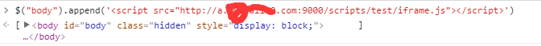

如何利用网页ajax请求暴露出来的接口去抓取网页数据？很多爬虫都能实现这个功能。不过今天要来和大家八一八单从前端的角度，利用js解决这个问题。
大家都知道，在不同域的情况下是不能发送ajax请求的，浏览器会报如下错误：

同时，内嵌的iframe中无法进行跨域通信的，也就是说不同域的iframe是无法互相读取数据的(当然利用hash变化可以从父window传入数据到子iframe，不过并没有什么意义)。iframe跨域通信时，浏览器会报如下错误：

其实这两个问题都是由于跨域造成的。
下面就介绍如何解决这个问题。
其实问题的关键就在于，浏览器在解析ajax请求地址时会和当前网页的地址进行比较，如果是跨域的，那就禁止掉并且报错。那么我们如果让浏览器解析出的ajax地址和当前网页的解析地址一样，浏览器不就不会禁止我们的请求了么。
那么浏览器是如何解析url的呢？
首先当浏览器访问一个域名时，会查询本地的DNS缓存中是否有关于这个网址对应ip地址，如果有的话，直接从本地取得ip地址然后访问，如果没有，浏览器就会向DNS服务器发出DNS请求获得该域名对应的ip地址然后存入本地缓存然后访问。
那么介于以上问题，我们只要在本地伪造一条域名的解析方式，然后再通过伪造的域和目标域进行跨域请求不就可以了么。
windows下的打开C:\Windows\System32\drivers\etc
这个文件夹下有一个hosts文件，如果改过hosts来上谷歌的同学对这个应该很熟悉，在hosts文件里加上这样一段代码：
这样你的访问a.目标网址.com就和访问localhost一样了，这样做的目的是方便搭起本地的服务时，本地的服务和目标的域名之间就不会存在跨域问题了，这样就能在本地，通过在目标网页植入iframe标签的方式，向目标域发起跨域请求，取得目标域的数据。
直接上代码(用了jQuery)
脚本代码，直接插在父域
1 2 3 4 5 6 7 8 9 10 11 12 13 14 15 16 17 18 19 20 21 22 23 24 25 26 27 28 29 30 31
| var mySrc = "http://a.目标网址.com:9000/myIframe.html"; document.domain = "目标网址.com"; $("body").append('<iframe src=' + mySrc + ' name="myIframe" id="getData"></frame>'); var interval; function start() { $("#getData").attr({"src": mySrc}); interval = setInterval(function() { window.myIframe.run(getLogitic); },10000) } function stop() { clearInterval(interval); } function getLogitic(orderId) { $.ajax({ url: '/query?'+ orderId +'&id=1&valicode=&temp=' + Math.random(), method: 'GET', success: function(res) { console.log(res); }, error: function(err) { console.log('err: ', err); } }) }
|
iframe中html代码
1 2 3 4 5 6 7 8 9 10 11 12 13 14 15 16 17 18 19 20 21 22 23 24 25 26 27 28 29 30 31 32
| <!DOCTYPE html> <html lang="en"> <head> <meta charset="UTF-8"> <title>Document</title> </head> <body> <script src="bower_components/jquery/dist/jquery.js"></script> <script> document.domain = "目标网址.com"; //关键代码，将子域提升到根域 var int; function run(callback) { //此请求用于向本地请求数据，然后根据本地的数据，利用父域传过来的回调函数向目标域发起请求，得到目标域的数据 $.ajax({ url: './getOrderList.json',//本地数据存储的地方，偷懒直接写了个json文件，可以是数据库中的数据 method: 'GET', success: function(res) { var data = res.list; int = setInterval(function(){ callback(data[0]); //执行父域传入的回调函数 data.shift(); if (data.length === 0) clearInterval(int); }, 1000); }, error: function(err) { console.log(err) } }) } </script> </body> </html>
|
注意：
- 只有将iframe提升到根域，这样才能与父window通信，耳document.domain指令只能提升当前域到当前的根域，这也是必须要修改本地hosts文件的原因，这是解决跨域问题的根本。
- 在抓取目标网页数据之前，要先看目标网页发送ajax请求的方式，得到请求的api，通过目标网页的控制台插入脚本，然后运行，得到要得到的数据，在通过和本地请求的方式，发送到本地。
下面是抓取某物流查询网页中物流信息的过程：
涂掉的为目标网址；这是向目标网页插入我的脚本，成功后网页中就会被插入了一个地址为本地的，但是域名和目标域相同的iframe。

####结果
这些数据可以在请求成功会传回本地。
最后，其实博主也是初识前端，还处在学习和探索当中，希望能与大家一起学习进步，欢迎大家指出文章中的错误和不足，一定虚心接受！
btw，首篇博文，希望大家多多支持！！！